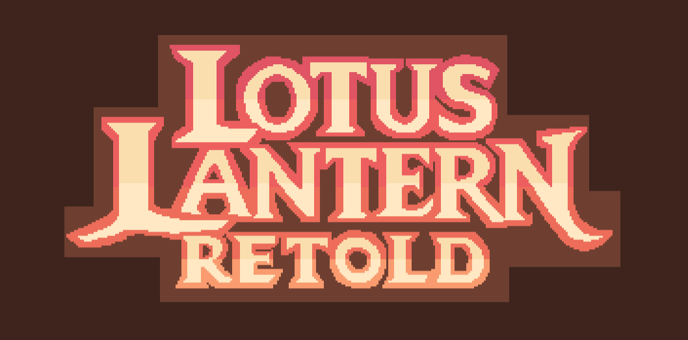

The official website for Lotus Lantern Retold, an RPG developed using Godot based on the Chinese myth Lotus Lantern.
In Lotus Lantern: Retold, you play as Chenxiang, a young warrior born from the forbidden union between the goddess Sanshengmu and a mortal man. After his mother is imprisoned beneath Mount Hua for defying the laws of heaven, Chenxiang sets out on a journey to save her. To do so, he must find the pieces of a lost power and a weapon strong enough to break her chains, facing enemies from both earth and heaven along the way. But as he battles his way forward, he begins to question the truth behind his mission and the role of his uncle Erlang Shen, the powerful deity standing in his path.
This is an extracurricular project with three team members led by Erica Liu, a high school student that enjoys coding, art, and Chinese culture. Thank you for playing the demo, and stay tuned for more updates! If you have any comments or suggestions, please contact us at lotuslanternretold@gmail.com.